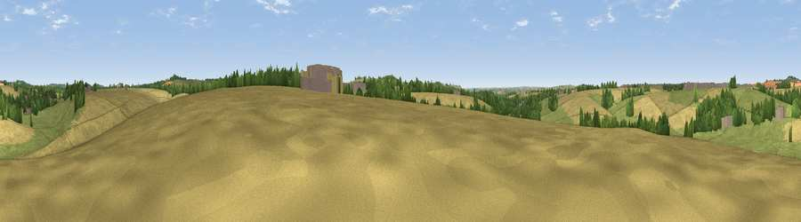

Viewpoint near Porton
#35187 in England · top 53% of its area beats it · near Porton · access?Where it is
The exact computed spot (SU 19975 37725). Click the marker for map links.
Public access: no public right of way or access land is recorded at this exact spot — it may be on private land. Computed from Natural England's CRoW access layer and OpenStreetMap rights of way — not the legal definitive map. Always verify locally.
The view, rendered

A 360° render of this exact spot computed from the terrain model, tree cover and land cover — summer colours, afternoon light, calibrated against photographs of famous viewpoints. Real trees, hedges and buildings will differ in detail.
The panorama
Grey silhouette: terrain skyline in each direction (720 bearings, Earth curvature and refraction included). Dashed green: skyline with trees (+15 m) and buildings (+8 m) as obstacles. Blue strip: how far the ground is visible on each bearing.
Where the view opens
Wedge length = distance to the farthest visible ground on that bearing (vegetation-aware). Rings at 10, 25 and 50 km.
What fills the view
45% cropland · 43% grassland · 11% woodland · 1% built-up
Angular shares of the visible panorama (visual magnitude), not map area. Landscape diversity 0.44 (0–1 Shannon).
Key numbers
More beautiful places nearby
The staircase of upgrades: each row has a higher view potential than everything closer. Driving times are estimates from straight-line distance, calibrated against real road routing — check an actual route before setting out.
| Place | Direction | Drive | Score |
|---|---|---|---|
| Idmiston Down | SE · 3 km | ~7 min | 37.9 |
| Viewpoint near Firsdown | SSE · 3 km | ~7 min | 57.9 |
| Viewpoint near Bulford | NNW · 5 km | ~11 min | 60.7 |
| Viewpoint near Bulford | N · 5 km | ~11 min | 70.3 |
| Viewpoint near Oare | N · 26 km | ~42 min | 72.9 |
| Martinsell viewpoint | N · 26 km | ~42 min | 76.9 |
| Viewpoint near Berwick St John | WSW · 32 km | ~50 min | 78.2 |
| West High Down | SSE · 54 km | ~75 min | 79.8 |
51.13845, -1.71587 · source: screening · position refined by local search. Computed location — check access rights before visiting.